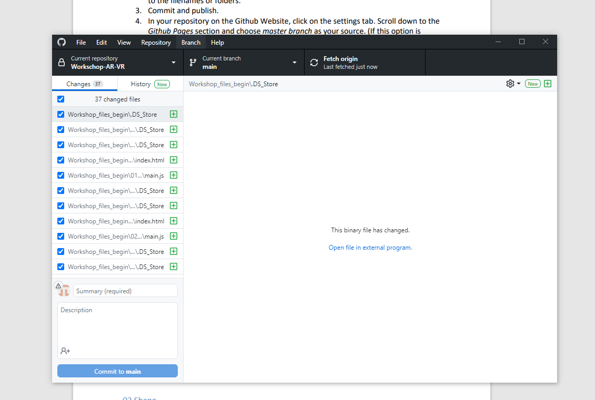
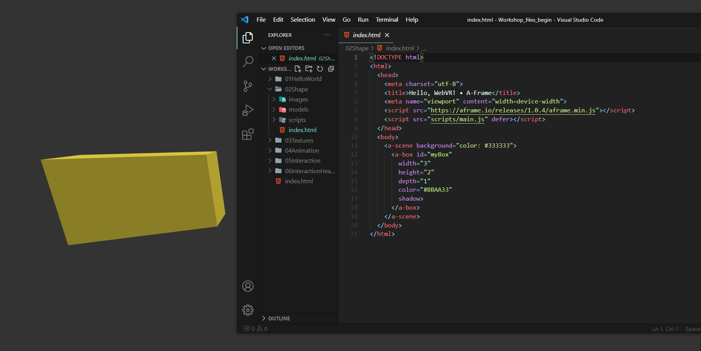
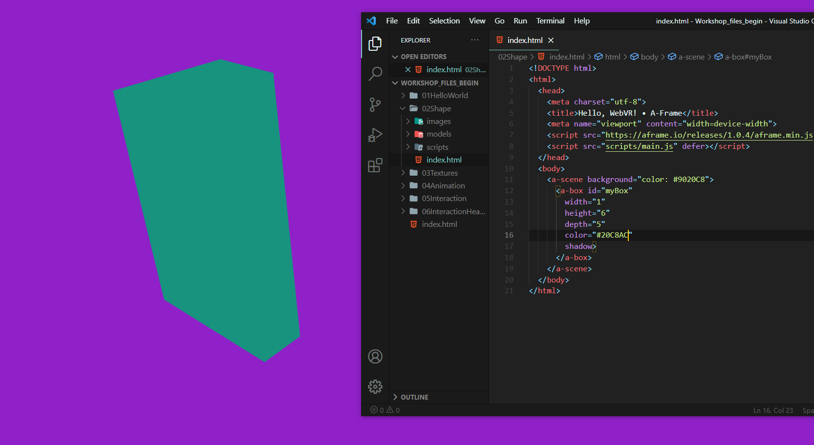
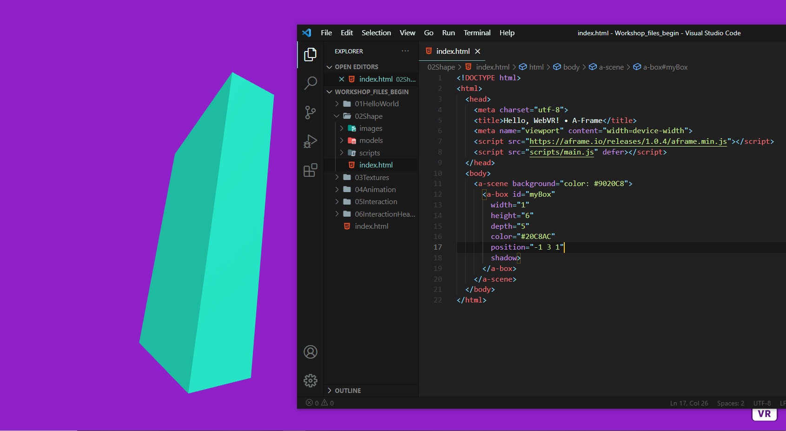
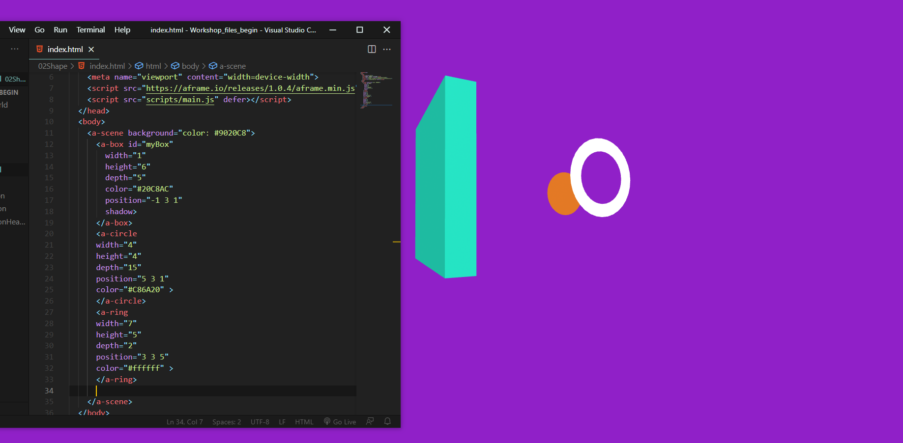

A-Frame Assignment
A-frame is een webframework voor het bouwen van virtual reality-ervaringen.
Het werkt met elementaire webtechnologie zoals HTML en Javascript en kan op uw computer of smartphone worden uitgevoerd.
De onderliggende technologie achter A-frame is webXR (de opvolger van webVR), een technologie om Virtual Reality en Augment Reality ervaringen in de browser te draaien.
Het doel van deze workshop is om kennis te maken met A-frame en hoe je er virtuele omgevingen mee kunt bouwen.
Met gegeven bestanden zoek ik uit hoe A-frame werkt met verschillende opdrachten die zijn gegeven.

1. Hier heb ik de gedownloadde besanden van blackboard in Github gezet

2. Dit is het bestand geopended in de browser. Het is een scene met daarin een box
3. Volgens de gegeven opdracht moest ik de box die er al was aanpassen.
 4.Uiteindelijk moest ik meer vormen in de scene plaatsen.Dit is het eindresultaat geworden. Bekijk de video onderdaan.
In deze video zie je met A-frame kan animeren. Het was mijn taak om een van de boxen sneller te gaan draaien(Zie de video hier onder).